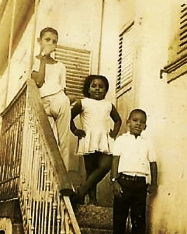
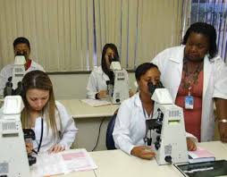

Sobre
Simone Maia Evaristo, é graduada em Ciências Biológicas pela
Universidade Gama Filho (1990), especialista em Citologia Clínica pela
UFRJ(2000) e mestre em Infecção HIV/Aids (UNIRIO). Presidente da
Associação Nacional de Citotecnologia (ANACITO),
É a única brasileira fellow da Academia Internacional
de Citologia (IAC), membro da Sociedade Latino-Americana de
Citopatologia (SLAC) e da African Organisation for Research and Training
in Cancer (AORTIC). Atualmente é Bióloga / Citotecnologista atuando como
docente do curso de formação Técnica de nivel médio de Técnico em
Citopatologia - INCA / EPSJV (Fiocruz), docente em pós-graduação na área
de Citologia Oncótica. É convidada frequentemente para participar de
congressos internacionais científicos e seu trabalho é reconhecido
mundialmente.
É responsável por promover cursos de atualização para os profissionais
brasileiros e pela integração com os colegas do exterior.
Simone tem a missão de divulgar o papel da Citotecnologia no controle
do câncer e apoiar a formação de técnicos.
História
Simone teve uma infância humilde e sempre estudou em escola
pública.Menina negra e pobre, mas com uma força absurda para virar o
jogo. Do primário ao ginásio ganhou certificado da escola porque leu
todos os livros da biblioteca. A curiosidade aguçada da menina Simone,
fez com que ela aprendesse a ler antes de ser alfabetizada. Na escola
suas notas eram sempre altas e Simone era disputada para os trabalhos em
grupo e para as feiras de ciências.Entre as dúvidas e pressões para
escolher o curso de graduação, Simone teve a sabedoria de perceber
aquilo que a conectava com a vida.
Um dia, eu vi uma plantinha nascendo do cimento. Ela estava
crescendo, resistindo... eu achei tão forte que decidi estudar
ciências biológicas.

No último ano do segundo grau, em 1985, como não tinha dinheiro para
curso pré-vestibular, se preparou assistindo o Telecurso 2000 todos os
dias durante um ano. Prestou o vestibular e teve uma nota ótima, e assim
inicia sua graduação em Ciências Biológicas pela Universidade Gama
Filho. Durante o curso, ela revezava os estudos com os trabalhos em uma
escola de freira, mas no último ano de aula, Simone decidiu se dedicar
integralmente à sua formação e largou o trabalho por um estágio sem
remuneração. Durante seus estágios foi se aperfeiçoando até que uma
colega percebeu seu potencial para a área de Citologia.
Em 1996, Simone Maia começou a trabalhar no INCA (Instituto Nacional do
Câncer), e até hoje continua lá fazendo a diferença. Seu trabalho é
realizar o estudo para detectar células de câncer, ou células que possam
virar câncer, e divulgar o papel fundamental da citotecnologia no
controle do câncer. Hoje, Simone é bióloga e citotecnologista,
supervisora da Área de Ensino Técnico do INCA.
